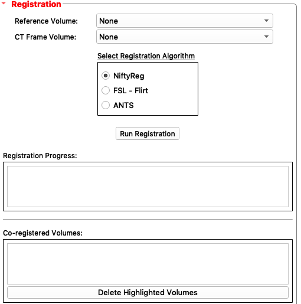
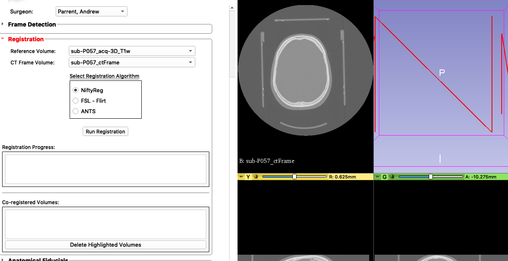

3. Registration¶
Select
Reference Volumeas3D T1 Weighted. ThisReference Volumewill be the scan that DBS Guide will co-register the other scans to as a reference.Select
CT Frame VolumeasCT FrameSelect
Registration AlgorithmasNiftyRegClick
Run Registration. You can watch the progess on theRegistration Processbar. OnceRegistration is completedis printed on theRegistration Progressbar, you will see the results underCo-registered Volumes.We need to confirm that the registration was successful. Link the views shown on the right by pressing the “link” icon located at the top of the scans as shown here:
This will ensure that the views are all linked together so when you zoom in one view, you zoom in on the others too.
Click the
Pinicon on the top left corner of the red menu bar to open Slicer’s viewer menu. Then click the “Viewer” icon shown as two arrows<<and selectT1 Weightedon the bottom selection. This setsT1 Weightedas the reference scan.Compare the
T1 Weightedscan with our co-registered volumes. See the following video:Select all the scans in
Co-registered Volumesand clickDelete Highlighted Volumes. This will leave us with just the co-registered volumes.Registration is now complete.